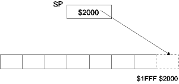
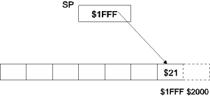
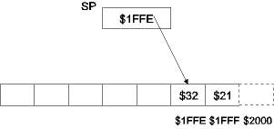
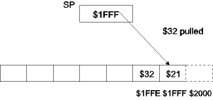
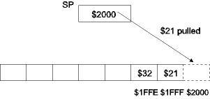

| Previous Section | Next Section | Index | Questions | Search the Text |
A stack provides a fast and convenient means for temporarily saving data in memory. The fundamental feature of a stack is its LIFO (Last In First Out) access - data is removed from a stack in the opposite order from which the data was added.
The 68HC12 has features to assist in the creation of a system stack. The stack pointer (SP) register contains the address of the topmost byte in the stack. There are instructions to add and remove data from the stack, as well as implement subroutines. These will be discussed later in this section.
In the 68HC12, the stack grows toward lower memory locations. For this reason, the stack pointer is initialized with the address 1 + the last location in RAM. If the variable data is allocated locations starting at the lowest memory address and moving up, that will allow for the maximum space for the RAM. We will place program code starting at location $2000, which is RAM but we will consider it to be ROM for development purposes. The internal RAM from $1000 to $1FFF will be used as RAM, so we initialize the stack pointer to $2000:
lds #$2000
The illustration below shows the stack pointer with a value of $2000, so the stack is considered to be empty.

When we save values on the stack, called a push, the stack pointer is decremented and the value is saved at the location pointed to by the decremented stack pointer value. Pushing $21 on the stack:

Every push operation works the same way. Pushing $32 on the stack, the value gets stored at $1FFE:

As values are pushed on the stack, the space taken by the stack increases, advancing toward lower addresses. If we allocate variables in memory starting at the lowest address, then the maximum possible stack space is obtained - the addresses between the last variable allocated and the top of RAM memory.
Removing values from the stack is called a pop or pull operation. The value is fetched from the location pointed to by the stack pointer, then the stack pointer is incremented. Performing a pull:

Note that the value at $1FFE remains the same, however it would be overwritten if we did a push at this time. Performing another pull fetches the last value from the stack, leaving the stack empty, our original state:

Important points to remember about using a stack:
The following instructions are provided to push and pull values between the stack and registers:
The push instructions involving 16 bit registers subtract two from the stack pointer before storing the value at the word location specified by the stack pointer. Likewise, the pull instructions involving 16 bit registers add two to the stack pointer after fetching the value at the word location specified by the stack pointer. The pulc instruction has the restriction that it cannot cause the X bit to change from a zero to a one.
Using the push and pull instructions provides a convenient way to save values that are in registers when that register is temporarily needed for another task. For example, consider the problem where all registers are being used, and it is necessary to multiply accumulator D by a constant value. However the emul instruction requires the use of register Y and does not allow an immediate operand. We can save the contents of index register Y on the stack (assuming the stack has been initialized):
pshy ; save value of Y
ldy #const
emul ; D <- D*const
puly ; restore value of Y
The pre/post increment/decrement indexed addressing modes along with the move instructions allow pushing and pulling byte or word values from memory, and pushing constant (immediate mode) values:
movb $800 1,-SP ; Push contents of byte location $800
movw 2,SP+ $802 ; Pull word into byte location $802
movb #27 1,-SP ; Push constant byte 27
We can also use indexed addressing to "peek" at values in the stack, without pulling them off:
ldaa 0,SP ; Load accumulator A with top of stack byte
This gives the same results as:
pula ; Pull stack into A
psha ; then push value back on stack
Lets say we have a certain code sequence we use repeatedly in a program, for example this sequence that swaps the top four bits with the bottom four bits in accumulator A, which we will call nibbleswap:
clrb
lsla
rolb
lsla
rolb
lsla
rolb
lsla
rolb
aba
We could save memory by having only one copy of this code in memory. Then we could jump to the code when we wanted to execute it. However how would we get back to where we were afterwards? We need to tell the nibbleswap routine where to return. We can use register X to hold the return address. To invoke the nibbleswap routine we can use the following code:
ldx #rp1 ; Load X with return address
jmp nibbleswap ; go to the nibbleswap routine
rp1:
Then we modify the nibbleswap routine to jump back to the location specified in register X:
nibbleswap:
clrb
lsla
rolb
lsla
rolb
lsla
rolb
lsla
rolb
aba
jmp 0,X
We haven't seen the jmp instruction used with indexed addressing before. The target of a jmp instruction is the effective address, so in this case execution jumps to the location specified by the contents of register X.
It doesn't matter how many places invoke the nibbleswap code. At the end of execution, the processor will jump back to the correct place.
ldx #rp1 ; Load X with return address
jmp nibbleswap ; go to the nibbleswap routine
rp1: ; which will return HERE
...
ldx #rp2 ; Load X with return address
jmp nibbleswap ; go to the nibbleswap routine
rp2: ; which will return HERE
...
ldx #rp3 ; Load X with return address
jmp nibbleswap ; go to the nibbleswap routine
rp3: ; which will return HERE
...
Routines which can be accessed from many locations are called subroutines. Most processors, including the 68HC12, provide special instructions to call (go to) subroutines and return from them. The return address is saved on the stack rather than in a register, so the stack pointer must be initialized before using these instructions.
The bsr and jsr instructions first push the address of the following instruction on the stack, then they branch or jump to the location specified by the operand. In this respect, they behave like the bra and jmp instructions. The rts instruction pulls a word from the top of the stack and jumps to that location.
There are two additional subroutine instructions, call and rtc, which are used in the special circumstance of expanded (>64k) memory. These will be discussed in the section External Memory/Peripheral Interfacing.
We can invoke the nibbleswap subroutine with either
jsr nibbleswap
or
bsr nibbleswap
if the address is in range. The final nibbleswap routine uses rts to return:
nibbleswap:
pshb ; save B
clrb
lsla
rolb
lsla
rolb
lsla
rolb
lsla
rolb
aba
pulb ; restore B
rts
The pshb pulb pair of instructions save the original contents of accumulator B and restore them before returning. It is a good practice in subroutines to preserve the contents of all registers that aren't being used to pass data in and out of the subroutine. This brings us to the next topic.
Most subroutines require either values passed to them (called parameters) or produce results that need to be passed back to the calling routine. There are three basic methods to pass this data between a subroutine and its calling routine: registers, memory, or the stack.
When the amount of data is small enough to fit in the registers, the best method is using the registers to pass the data. This method tends to be simple and fast. The subroutine should start with a comment specifying which registers are to contain parameters and which will return results. All other registers should be unaltered by the subroutine to avoid potential corruption of data in the calling routines. The following subroutine multiplies the value in accumulator A by 5/4, returning the result in D:
m54: ; Multiply A by 5/4, returning result in D
ldab #5
mul
pshx
ldx #4
idiv
tfr X D
pulx
rts
It saves and restore register X, so none of the registers not used for either parameters or results are altered. We can use this subroutine in this manner:
ldaa foo ; Multiply foo by 5/4, putting result in word bar
bsr m54
std bar
Data can be passed to and from subroutines using memory. However it is difficult to manage memory in an efficient manner. Since memory is a limited resource, it is important that memory locations used for data passing be reused in many subroutines. The following example uses a byte location b1 and a word location w1 to pass data:
m54: ; Multiply (b1) by 5/4, putting result in (w1)
pshd
ldab #5
ldaa b1
mul
pshx
ldx #4
idiv
stx w1
pulx
puld
rts
...
movb foo b1 ; multiply foo by 5/4, putting result in bar
bsr m54
movw w1 bar
There is basically no reason to use the memory method if the data fits within the registers. However it is also possible to use the stack to pass the additional data that doesn't fit in the registers. This approach is typically used by compilers. It can be tedious to use with assemblers because the position of the value on the stack must be calculated manually, and care must be taken to keep the stack balanced. In this example, the parameter is passed on the stack, while the result is passed in a register:
m54: ; Multiply byte on stack by 5/4, putting result in D
ldab #5
ldaa 2,SP ; parameter on stack, under return address
mul
pshx
ldx #4
idiv
tfr X D
pulx
rts
...
movb foo 1,-SP ; push foo on stack
bsr m54
ins ; correct stack pointer to remove foo
std bar
All modern high level languages, such as C, provide semantics that implement subroutines. In most cases the parameters are passed to the subroutine on the stack, and a single value may be returned from the subroutine, which is typically passed in a register. However the exact implementation is determined by the compiler, and the user doesn't need to be concerned with the details.
In the C language, variables declared inside of a subroutine are, in general, "temporary" variables that only exist during the execution of the subroutine. These temporary variables are typically implemented by storing their values on the stack. The variables are stored in a stack frame which is a sequence of memory locations allocated on the stack at the start of the subroutine. This technique can also be used by assembly language programmers. The allocation is accomplished by subtracting the number of bytes needed from the stack pointer (say 10 bytes):
leas -10,SP
Variables are accessed by using stack pointer plus offset indexed addressing mode:
ldd 4,SP ; Load contents of the 4th and 5th bytes in the stack frame into D
staa 3,SP ; Store accumulator A into 3rd byte into the stack frame.
At the end of the subroutine, the stack frame is deleted by adding to the stack pointer:
leas 10,SP
The D-Bug12 debugging program provides a number of subroutines which can be accessed from programs. Of course, if the program is to eventually be released as part of an embedded microcontroller without D-Bug12 present, these routines will not work. Thus they should only be used for development purposes. The routines and the interface to them is described in detail in the Reference Guide for D-Bug12 starting on page 79. The routines are designed so they can be accessed from either Freescale's C (not the one on the CD) or assembly code. Parameters are passed to the routines in registers and on the stack, with any return value in a register. Calling the subroutines is done through a table of the subroutine starting addresses. By using a table, different versions/releases of D-Bug12 can have the subroutines at different addresses. The only thing that must be kept constant is the address of the table entries. For example, the following sequence will write the character 'A' to the debugger console display:
ldab #'A ; character to display
ldx $EE86 ; Get address of subroutine
jsr 0,X ; and call it
The use of index register X can be eliminated by using jsr with an indirect, indexed addressing mode:
ldab #'A ; character to display
jsr [$EE86-*-4,PC] ; call subroutine
It is left as an exercise to show that these are equivalent.
Those functions listed with the keyword far are accessed using the call instruction rather than the jsr instruction as they may be in a different memory bank than is currently selected. This will be explained in the section on Memory Expansion.
Continue with Input/Output Overview.
Return to the Index.